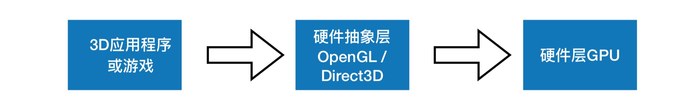
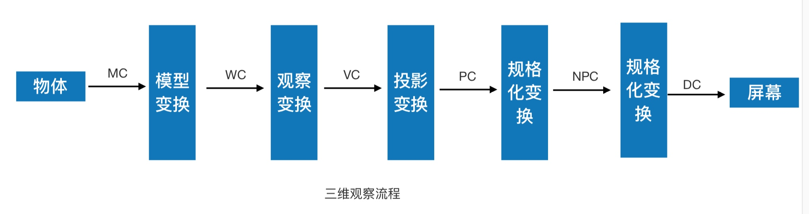

OpenGL - 渲染过程
一、基本图形硬件流水线设计

应⽤用程序层 -> 硬件抽象层 -> 硬件层
应⽤层: 游戏和应⽤用层软件开发⼈人员为主体，通过调⽤用API进行上层开发，不需要考虑移植性问题。
硬件抽象层: 抽象出硬件的加速功能，进行有利于应用层开发的封装，并向应⽤层开发API
硬件层: 将硬件驱动提供给抽象层，以实现抽象层加速功能的有效性。
二、渲染流水线的具体流程
1、应⽤层
应⽤程序层主要与内存，CPU打交道，诸如碰撞检测，场景图监理，视锥裁剪等经典算法在此阶段执行。在阶段的末端，几何体的数据(顶点坐标，法向量，纹理坐标，纹理)等通过数据总线传送到图形硬件
2、硬件抽象层
在这⼀层，我们目前使用的是DirectX与OpenGL。对于这⼀部分，主要是⼀些API等的调⽤
3、硬件层
硬件层在渲染流水线中最为复杂，也最为重要。可编程渲染流水线与固定渲染流水线的区别在于是否对着色器进⾏编程。
⾸先我们先了解固定渲染流水线它主要分为以下几个阶段:
顶点变换 -> 图元转配与光栅化 -> ⽚段纹理映射和着色 -> 光栅化操作
三、硬件层—固定渲染管线流程图

光栅化(Rasterization):将顶点数据转换为片元的过程! 将具体的图转化为一个个栅格组成的图像的作⽤
⽚元中每个一个元素对于帧缓存区的一个像素; 光栅化其实是一个将几何图元变成一个二维图像的过程!!
光栅化的过程就是为了产出⽚元
四、硬件层—可编程渲染流水线流程图

五、GPU 图形渲染管线

应用程序阶段
主要是⾼级编程语言开发,C,OC,C++
输出:通过数据总线,把几何体的数据(顶点坐标\法线\纹理理坐标\纹理理)等传送到GPU上
⼏何阶段
输入:应⽤程序末端的内容
负责任务:顶点坐标变换,光照,裁剪,投影,屏幕映射
输出:经过变换和投影之后的屏幕坐标,颜⾊,纹理坐标
光栅化阶段
见上
光栅化操作
这⼀步我们将会对其进行各种测试，⽽假如它通过了所有的测试，⽚段将会显示在屏幕上

抖动显示:一种能够使用较少的颜色种类模拟较多颜色的显示模式
⼏何处理阶段
几何阶段主要负责大部分多边形操作和顶点操作，包括顶点着色、坐标变换、生成图元、投影、
裁剪、屏幕映射等过程，其中顶点着色、坐标变换由顶点着色器完成
- 顶点着⾊器
- ⽣成图元： 顶点数组或索引数组经由顶点着色程序生成三角形的组合
- 投影： 透视投影，平行投影
- 裁切： 仅保留视景体内部的图元进行渲染
- 屏幕映射： 这个阶段是不可配置也不可编程的。主要用来实现图元的坐标转换到屏幕坐标
六、其他
Shader
Shader，中⽂名，着色器。着⾊器其实就是一段在GPU运行的程序。我们平时的程序，是在CPU运行。由于GPU的硬件设计结构与CPU有着很大的不同，所以GPU需要一些新的编程语言
渲染流水线分为两种，其中一种为可编程渲染流水线。另外一种为固定渲染流水线。(也称可编程管线或固定管线，管线就是流⽔线的意思)。渲染流⽔线可否编程，取决于程序猿能否在顶点着色器以及⽚段着色器上进⾏行编码。⽽现在的渲染流水线，基本都是可编程的，当然，它们也支持固定渲染流水线的功能
CPU 与 GPU 之间的关系
GPU具有⾼并行的结构，所以在处理图形数据和复杂算法比CPU更加有效率

CPU在执行任务的时候，⼀个时刻只会处理⼀个数据，不存在真正意义上的并行，⽽GPU则有多个处理器核，在⼀个时刻可以并行处理多个数据
三维坐标转变为二维屏幕坐标的过程

MC是建模坐标系，WC是世界坐标系，VC是观察坐标系，PC是投影坐标系，NPC是规格化投影坐标系，DC是设备坐标系
坐标系详细概念
- 世界坐标系 坐标系统主要⽤于计算机图形场景中的所有图形对象的空间定位和定义
- 局部坐标系 独立于世界坐标系来定义物体几何特性
- 观察坐标系 观察坐标系通常是以视点的位置为原点，通过⽤户指定的一个向上的观察向量来定义整个坐标系统，观察坐标系主要⽤于从观察者的角度对整个世界坐标系内的对象进行重新定位和描述，从而简化⼏何物体在投影面的成像的数学推导和计算
- 投影坐标系 物体从世界坐标描述转换到观察坐标后，可将三维物体投影到二维表面上，即投影到虚拟摄像机的胶片上，这个过程就是投影变换。以胶片中心为参考原点的空间坐标系称为投影坐标系，物体在投影坐标系中的坐标称为投影坐标。
- 设备坐标系 是图形设备上采用的与具体设备相关的坐标系。设备坐标系一般采⽤用整数坐标，其坐标范围由具体设备的分辨率决定。设备坐标系上的⼀个点一般对应图形设备上的一个像素。由于具体设备的限制，设备坐标系的坐标范围一般是有限的。
- 规格化设备坐标系 是为了避免设备相关性而定义的一种虚拟的设备坐标系。规格化坐标系的坐标范围一般从0到1，也有的是从-1到+1。采用规格化设备坐标系的好处是屏蔽了具体设备的分辨率，使得图形处理理能够尽量避开对具体设备坐标的考虑。实际图形处理时，先将世界坐标转换成对应的规格化设备坐标，然后再将规格化设备坐标映射到具体的设备坐标上去。
- 屏幕坐标系统 也称设备坐标系统，它主要⽤于某⼀特殊的计算机图形显示设备(如光栅显示器)的表⾯的点的定义，在多数情况下，对于每一个具体的显示设备，都有一个单独的坐标系统，在定义了成像窗口的情况下，可进一步在屏幕坐标系统中定义称为视图区(view port)的有界区域，视图区中的成像即为实际所观察到的。
参照
简书 MissCC： 简书 MissCC
OpenGL 常见概念性理解整理
什么叫光栅化（Rasterize/rasteriztion）？
栅格化或者像素化，就是把矢量图形转化成像素点儿的过程
我们屏幕上显示的画面都是由像素组成，而三维物体都是点线面构成的。要让点线面，变成能在屏幕上显示的像素，就需要Rasterize这个过程。就是从矢量的点线面的描述，变成像素的描述
图元是什么？
图元可以理解为组成图形的基本单元
比如点、线、三角形。 我们可以通过一系列函数或顶点数据帮助我们实现多种多样的图形。
什么叫管线？
管线(pipeline),可以理解为渲染流水线。管线，实际上指的是一堆原始图形数据途经一个输送管道，期间经过各种变化处理最终出现在屏幕的过程。
图形渲染管线可以被划分为两个主要部分：第一部分把你的3D坐标转换为2D坐标，第二部分是把2D坐标转变为实际的有颜色的像素。
什么叫固定管线？
可以简单理解为渲染图像的这个过程，我们只能通过调用GLShaderManager类的固定管线效果实现我们一系列的着色器处理。
什么可编程管线？
可以简单理解， 在我们处理图形的过程，我们必须使用顶点着色器和片元着色过程。我们可以才有GLSL自行编写着色器程序，来执行这个过程的事情。
顶点着色器调⽤次数与⽚元着⾊器调⽤次数与什么有关?谁⽐较多?
片元着⾊色器次数比较多!
顶点着色器调⽤次数与顶点数量相关，
⽚元着色器调用与像素多少相关
为什么需要对三维空间的顶点进行坐标空间转换?
输⼊到计算机当中一系列三维坐标的点,但是我们看到的屏
幕是二维坐标点.所以需要转换
ObjectSpace(物体空间/模型空间)-> WorldSpace(世界空
间)->EyeSpace(观察空间)->ClicpAndProjectSpace(屏幕
空间)
在OpenGL 中有5种坐标系。
1.局部坐标系(物体空间)
2.世界空间
3.观察空间(视觉空间)
4.裁剪空间
5.屏幕空间
这是一个顶点最终转化到片段之前需要经历的所有不同的状态变化。
那这些变换通过什么？
比如模型、观察、投影三个矩阵的。

背面剔除和深度测试使用场景
背面剔除是为了解决自身图片背部可见问题
深度测试是为了解决图形重叠的问题
Shader
Shader，中⽂名，着色器。着⾊器其实就是一段在GPU运行的程序（图形硬件设计所执行的一类特殊的函数，可以理解为图像处理单元（GPU）编译的一种小型程序）。
我们平时的程序，是在CPU运行。由于GPU的硬件设计结构与CPU有着很大的不同，所以GPU需要一些新的编程语言
术语理解
渲染:表示计算机从模型创建最终图像的过程。OpenGL 只是一种基于光栅化的系统。
模型（场景对象）：通过几何图元（点、线、三角形）来构建的。
着色器，它是图形硬件设计所执行的一类特殊的函数。可以理解为图像处理单元（GPU）编译的一种小型程序。
四种不同的着色阶段（shander stage），其中最常用的包括顶点着色器（vertex shader）以及片元着色器，前者用于处理顶点数据，后者用于处理光栅化后的片元数据。所有OpenGL程序都需要用到这两类着色器
帧缓存（framebuffer），像素（pixel），是显示器上最小的可见单元。计算机系统将所有的像素保存到帧缓存当中，后者是有图形硬件设备管理的一块独立内存区域，可以直接映射到最终的显示设备上
OpenGL 渲染图像的OpenGL 程序需要执行的操作：
- 从OpenGL的几何图元中设置数据，用于构建形状。
- 使用不同的着色器（shader）对输入的图元数据执行计算操作，判断它们的位置、颜色，以及其他渲染属性。
- 将输入图元的数学描述转化为与屏幕位置对应的像素片元（fragment）。这一步也称为光栅化（rasterization）。
- 最后，针对光栅化过程产生的每个片元，执行片元着色器（fragment shader），从而决定这个片元的最终颜色和位置。
- 如果有必要，还需要对每个片元执行一些额外的操作，例如判断片元对应的对象是否可见，或者将片元的颜色与当前屏幕位置的颜色进行融合。
OpenGL 常见流程

- 顶点着色器 和 片元着色器是必需的。细分和几何着色器是可选的捕捉。
- OpenGL 需要将所有的数据都保存到缓存对象中（buffer object）
屏幕渲染⽅式
On-Screen Rendering(当前屏幕渲染)
指的是GPU的渲染操作是在当前用于显示的屏幕缓存区中进行的。
Off-Screen Rendering(离幕渲染)
指的是GPU在当前屏幕缓存区以外新开辟一个缓存区进行渲染操作
一般情况下，OpenGL ES 会将应用提供到渲染服务的动画直接渲染显示(使用基本的渲染的流程) 但对于一些复杂的图像动画的渲染，并不能够直接渲染叠加显示出来。而是需要根据 Command Buffer 分通道进⾏行渲染再组合。这个组合过程中，就有些渲染通道是不会直接显示出来的。标记此次渲染需要更多的渲染通道和合并步骤，⽽这些没有直接渲染显示在屏幕上的通道就是离屏渲染通道。
离屏渲染为什么会卡顿?
离屏渲染需要更多的渲染通道，而不同的渲染通道间切换需要消耗⼀定的时间，这个时间内GPU会闲置。当通道数量足够时，对性能也会较大的影响。
离屏渲染的体现
1、相⽐于当前屏幕渲染，离屏渲染的代价相对⽽言较高。主要有以下2个原因:
1.创建新的缓存区
2.上下文切换
2、那些情况会使⽤离屏渲染(off-Screen Render)?
- drawRect
- layer.shouldRasterize = true;
- 有mask或者阴影(layer.makesToBounds) shouldRasterize(光栅化)、masks(遮罩)、shadows(阴影) edge antialiasing(抗锯⻮齿)、group opacity(不不透明)
- Text(UILabel,CATextLayer,CoreText)
参照
简书 MissCC： 简书 MissCC
目录
- 什么叫光栅化（Rasterize/rasteriztion）？
- 图元是什么？
- 什么叫管线？
- 什么叫固定管线？
- 什么可编程管线？
- 顶点着色器调⽤次数与⽚元着⾊器调⽤次数与什么有关?谁⽐较多?
- 为什么需要对三维空间的顶点进行坐标空间转换?
- 在OpenGL 中有5种坐标系。
- 背面剔除和深度测试使用场景
- Shader
- 术语理解
- OpenGL 渲染图像的OpenGL 程序需要执行的操作：
- OpenGL 常见流程
- 屏幕渲染⽅式
- 离屏渲染的体现


OpenGL ES - - GLKit（GLKBaseEffect）
Speed up OpenGL ES or OpenGL app development. Use math libraries, background texture loading, pre-created shader effects, and a standard view and view controller to implement your rendering loop.
加快OpenGL ES或OpenGL应用程序开发。 使用数学库，背景纹理加载，预先创建的着色器效果以及标准视图和视图控制器来实现渲染循环。

以一个简单的案例来使用 GLKBaseEffect
GLKBaseEffect is designed to simplify visual effects common to many OpenGL applications today.
GLKBaseEffect旨在简化当今许多OpenGL应用程序常见的视觉效果。GLKBaseEffect is program based and, with the binding of its underlying GLSL program
GLKBaseEffect是基于程序的，并且通过其基础GLSL程序的绑定GLKBaseEffect requires at least an OpenGL Core Profile. An appropriate context must be created and made current prior to instantiating and initializing GLKBaseEffect objects.
使用GLKBaseEffect的规范步骤是
(1) 分配并初始化GLKBaseEffect的一个实例
directionalLightEffect = [[GLKBaseEffect alloc] init];(2) 在效果上设置所需的属性
// Configure light0 directionalLightEffect.light0.position = lightPosition;
directionalLightEffect.light0.diffuseColor = diffuseColor;
directionalLightEffect.light0.ambientColor = ambientColor;
// Configure material
directionalLightEffect.material.diffuseColor = materialDiffuseColor;
directionalLightEffect.material.ambientColor = materialAmbientColor;
directionalLightEffect.material.specularColor = materialSpecularColor;
directionalLightEffect.material.shininess = 10.0;(3) 优选用顶点数组对象初始化顶点属性/顶点数组状态为要绘制的模型或场景
glGenVertexArraysOES(1, &vaoName); glBindVertexArrayOES(vaoName);
// 为每个顶点属性创建并初始化VBO
// 下面的例子展示了一个设置位置顶点属性的例子.
// 为每个额外的所需属性重复以下步骤：normal，color，texCoord0，texCoord1.
glGenBuffers(1, &positionVBO);
glBindBuffer(GL_ARRAY_BUFFER, positionVBO);
glBufferData(GL_ARRAY_BUFFER, vboSize, dataBufPtr, GL_STATIC_DRAW);
glVertexAttribPointer(GLKVertexAttribPosition, size, type, normalize, stride, NULL);
glEnableVertexAttribArray(GLKVertexAttribPosition);
...针对其他所需的顶点属性重复上述步骤
glBindVertexArrayOES(0); // unbind the VAO we created above(4) 对于每个绘制的帧：更新每帧更改的属性。 通过调用 - [GLKBaseEffect prepareToDraw] 同步更改的效果状态。用效果画出模型. 用效果画出模型
directionalLightEffect.transform.modelviewMatrix = modelviewMatrix; [directionalLightEffect prepareToDraw];
glBindVertexArrayOES(vaoName);
glDrawArrays(GL_TRIANGLE_STRIP, 0, vertCt);
详细代码：DEMO
OpenGL ES - GLSL
不采用GLKBaseEffect，使用编译链接自定义的着色器（shader）。用简单的glsl语言来实现顶点、片元着色器，并图形进行简单的变换。

一、创建图层
CAEAGLLayer
/* CAEAGLLayer is a layer that implements the EAGLDrawable protocol,
* allowing it to be used as an OpenGLES render target. Use the
* `drawableProperties' property defined by the protocol to configure
* the created surface. */CAEAGLLayer是一个实现EAGLDrawable协议的层，
*允许它用作OpenGLES渲染目标。 使用
*协议定义的`drawableProperties'属性进行配置
*创建的表面。
- 创建图层
设置放大倍数
[self setContentScaleFactor:[[UIScreen mainScreen]scale]];将图层设为不透明（默认是透明的）
self.myEagLayer.opaque = YES;设置
drawableProperties属性,这里设置不维持渲染内容以及颜色格式为RGBA8self.myEagLayer.drawableProperties = [NSDictionary dictionaryWithObjectsAndKeys:[NSNumber numberWithBool:false],kEAGLDrawablePropertyRetainedBacking,kEAGLColorFormatRGBA8,kEAGLDrawablePropertyColorFormat,nil];
/************************************************************************/
/* Keys for EAGLDrawable drawableProperties dictionary */
/* */
/* kEAGLDrawablePropertyRetainedBacking: */
/* Type: NSNumber (boolean) */
/* Legal Values: True/False */
/* Default Value: False */
/* Description: True if EAGLDrawable contents are retained after a */
/* call to presentRenderbuffer. False, if they are not */
/* */
/* kEAGLDrawablePropertyColorFormat: */
/* Type: NSString */
/* Legal Values: kEAGLColorFormat* */
/* Default Value: kEAGLColorFormatRGBA8 */
/* Description: Format of pixels in renderbuffer */
/************************************************************************/
- kEAGLDrawablePropertyRetainedBacking: 表示绘图表面显示后，是否保留其内容。这个key的值，是一个通过NSNumber包装的bool值。如果是false，则显示内容后不能依赖于相同的内容，ture表示显示后内容不变。一般只有在需要内容保存不变的情况下，才建议设置使用,因为会导致性能降低、内存使用量增减。一般设置为flase.
- kEAGLDrawablePropertyColorFormat: 可绘制表面的内部颜色缓存区格式，这个key对应的值是一个NSString指定特定颜色缓存区对象。默认是kEAGLColorFormatRGBA8
- kEAGLColorFormatRGBA8：32位RGBA的颜色，4*8=32位
- kEAGLColorFormatRGB565：16位RGB的颜色，
- kEAGLColorFormatSRGBA8：sRGB代表了标准的红、绿、蓝，即CRT显示器、LCD显示器、投影机、打印机以及其他设备中色彩再现所使用的三个基本色素。sRGB的色彩空间基于独立的色彩坐标，可以使色彩在不同的设备使用传输中对应于同一个色彩坐标体系，而不受这些设备各自具有的不同色彩坐标的影响。
二、创建上下文
指定OpenGL ES 渲染API版本，我们使用2.0
EAGLRenderingAPI api = kEAGLRenderingAPIOpenGLES2;创建图形上下文
EAGLContext *context = [[EAGLContext alloc] initWithAPI:api];判断是否创建成功
if (!context) { NSLog(@"Create context failed!");
return;
}设置图形上下文
if (![EAGLContext setCurrentContext:context]) { NSLog(@"setCurrentContext failed!");
return;
}将局部context，变成全局的
self.myContext = context;
三、清空缓存区
导入框架#import
创建2个帧缓存区，渲染缓存区，帧缓存区
@property (nonatomic , assign) GLuint myColorRenderBuffer; @property (nonatomic , assign) GLuint myColorFrameBuffer;清空缓存区
glDeleteBuffers(1, &_myColorRenderBuffer); self.myColorRenderBuffer = 0;
glDeleteBuffers(1, &_myColorFrameBuffer);
self.myColorFrameBuffer = 0;
四、设置RenderBuffer
定义一个缓存区
GLuint buffer;申请一个缓存区标志
glGenRenderbuffers(1, &buffer); //同 glGenRenderbuffers(1, &buffer);
//赋值
self.myColorRenderBuffer = buffer;将标识符绑定到GL_RENDERBUFFER
glBindRenderbuffer(GL_RENDERBUFFER, self.myColorRenderBuffer);myColorRenderBuffer渲染缓存区分配存储空间
[self.myContext renderbufferStorage:GL_RENDERBUFFER fromDrawable:self.myEagLayer];注意：frame buffer仅仅是管理者，不需要分配空间； render buffer的存储空间的分配，对于不同的render buffer，使用不同的API进行分配，
而只有分配空间的时候，render buffer句柄才确定其类型
五、设置FrameBuffer
定义一个缓存区
GLuint buffer;申请一个缓存区标志
glGenRenderbuffers(1, &buffer); //赋值
self.myColorFrameBuffer = buffer;将标识符绑定到GL_FRAMEBUFFER
glBindFramebuffer(GL_FRAMEBUFFER, self.myColorFrameBuffer);renderbuffer跟framebuffer进行绑定,将_myColorRenderBuffer 通过glFramebufferRenderbuffer函数绑定到GL_COLOR_ATTACHMENT0上。
glFramebufferRenderbuffer(GL_FRAMEBUFFER, GL_COLOR_ATTACHMENT0, GL_RENDERBUFFER, self.myColorRenderBuffer);//接下来，可以调用OpenGL ES进行绘制处理，最后则需要在EGALContext的OC方法进行最终的渲染绘制。这里渲染的color buffer,这个方法会将buffer渲染到CALayer上。- (BOOL)presentRenderbuffer:(NSUInteger)target;
六、开始绘制
设置颜色、设置视口大小
//设置清屏颜色 glClearColor(0.0f, 1.0f, 0.0f, 1.0f);
//清除屏幕
glClear(GL_COLOR_BUFFER_BIT);
CGFloat scale = [[UIScreen mainScreen]scale];
//设置视口大小
glViewport(self.frame.origin.x * scale, self.frame.origin.y * scale, self.frame.size.width * scale, self.frame.size.height * scale);读取顶点着色程序、片元着色程序
NSString *vertFile = [[NSBundle mainBundle]pathForResource:@"shaderv" ofType:@"vsh"]; NSString *fragFile = [[NSBundle mainBundle]pathForResource:@"shaderf" ofType:@"fsh"];加载shader
self.myPrograme = [self loadShaders:vertFile Withfrag:fragFile];//见附链接
glLinkProgram(self.myPrograme); GLint linkStatus;
//获取链接状态
glGetProgramiv(self.myPrograme, GL_LINK_STATUS, &linkStatus);
if (linkStatus == GL_FALSE) {
GLchar message[512];
glGetProgramInfoLog(self.myPrograme, sizeof(message), 0, &message[0]);
NSString *messageString = [NSString stringWithUTF8String:message];
NSLog(@"Program Link Error:%@",messageString);
return;
}使用program
glUseProgram(self.myPrograme);设置顶点、纹理坐标
...处理顶点数据
glVertexAttribPointer(position, 3, GL_FLOAT, GL_FALSE, sizeof(GLfloat) * 5, NULL);处理纹理数据
glVertexAttribPointer(textCoor, 2, GL_FLOAT, GL_FALSE, sizeof(GLfloat)*5, (float *)NULL + 3);加载纹理
获取图片的CGImageRef
读取图片的大小，宽和高
获取图片字节数 宽高4（RGBA）
创建上下文
在CGContextRef上绘图 ,解决图片倒置的方法
画图完毕就释放上下文
绑定纹理到默认的纹理ID（这里只有一张图片，故而相当于默认于片元着色器里面的
设置纹理属性
载入纹理2D数据
绑定纹理
释放spriteData
获取shader里面的变量, 模型视图变换传值
绘制并显示缓存数据 presentRenderbuffer
glDrawArrays(GL_TRIANGLES, 0, 6); [self.myContext presentRenderbuffer:GL_RENDERBUFFER];
附
- frame buffer 和 render buffer 关系
buffer分为frame buffer 和 render buffer2个大类。其中frame buffer 相当于render buffer的管理者。frame buffer object即称FBO，常用于离屏渲染缓存等。render buffer则又可分为3类。colorBuffer、depthBuffer、stencilBuffer。
加载shader
- 定义2个零时着色器对象
- 创建program
- 编译顶点着色程序、片元着色器程序
- 读取文件路径字符串
- 创建一个shader（根据type类型）
- 将顶点着色器源码附加到着色器对象上
- 把着色器源代码编译成目标代码
- 创建最终的程序
- 释放不需要的shader
-(GLuint)loadShaders:(NSString *)vert Withfrag:(NSString *)frag {
//定义2个零时着色器对象
GLuint verShader, fragShader;
//创建program
GLint program = glCreateProgram();
//编译顶点着色程序、片元着色器程序
//参数1：编译完存储的底层地址
//参数2：编译的类型，GL_VERTEX_SHADER（顶点）、GL_FRAGMENT_SHADER(片元)
//参数3：文件路径
[self compileShader:&verShader type:GL_VERTEX_SHADER file:vert];
[self compileShader:&fragShader type:GL_FRAGMENT_SHADER file:frag];
//创建最终的程序
glAttachShader(program, verShader);
glAttachShader(program, fragShader);
//释放不需要的shader
glDeleteShader(verShader);
glDeleteShader(fragShader);
return program;
}
//链接shader
- (void)compileShader:(GLuint *)shader type:(GLenum)type file:(NSString *)file{
//读取文件路径字符串
NSString* content = [NSString stringWithContentsOfFile:file encoding:NSUTF8StringEncoding error:nil];
const GLchar* source = (GLchar *)[content UTF8String];
//创建一个shader（根据type类型）
*shader = glCreateShader(type);
//将顶点着色器源码附加到着色器对象上。
//参数1：shader,要编译的着色器对象 *shader
//参数2：numOfStrings,传递的源码字符串数量 1个
//参数3：strings,着色器程序的源码（真正的着色器程序源码）
//参数4：lenOfStrings,长度，具有每个字符串长度的数组，或NULL，这意味着字符串是NULL终止的
glShaderSource(*shader, 1, &source,NULL);
//把着色器源代码编译成目标代码
glCompileShader(*shader);
}
- 设置纹理
//设置纹理
- (GLuint)setupTexture:(NSString *)fileName {
//1、获取图片的CGImageRef
CGImageRef spriteImage = [UIImage imageNamed:fileName].CGImage;
//判断图片是否获取成功
if (!spriteImage) {
NSLog(@"Failed to load image %@", fileName);
exit(1);
}
//2、读取图片的大小，宽和高
size_t width = CGImageGetWidth(spriteImage);
size_t height = CGImageGetHeight(spriteImage);
//3.获取图片字节数 宽*高*4（RGBA）
GLubyte * spriteData = (GLubyte *) calloc(width * height * 4, sizeof(GLubyte));
//4.创建上下文
/*
参数1：data,指向要渲染的绘制图像的内存地址
参数2：width,bitmap的宽度，单位为像素
参数3：height,bitmap的高度，单位为像素
参数4：bitPerComponent,内存中像素的每个组件的位数，比如32位RGBA，就设置为8
参数5：bytesPerRow,bitmap的没一行的内存所占的比特数
参数6：colorSpace,bitmap上使用的颜色空间 kCGImageAlphaPremultipliedLast：RGBA
*/
CGContextRef spriteContext = CGBitmapContextCreate(spriteData, width, height, 8, width*4,CGImageGetColorSpace(spriteImage), kCGImageAlphaPremultipliedLast);
//5、在CGContextRef上绘图
/*
CGContextDrawImage 使用的是Core Graphics框架，坐标系与UIKit 不一样。UIKit框架的原点在屏幕的左上角，Core Graphics框架的原点在屏幕的左下角。
CGContextDrawImage
参数1：绘图上下文
参数2：rect坐标
参数3：绘制的图片
*/
CGRect rect = CGRectMake(0, 0, width, height);
//使用默认方式绘制，发现图片是倒的。
CGContextDrawImage(spriteContext, CGRectMake(0, 0, width, height), spriteImage);
/*
解决图片倒置的方法(2):
CGContextTranslateCTM(spriteContext, rect.origin.x, rect.origin.y);
CGContextTranslateCTM(spriteContext, 0, rect.size.height);
CGContextScaleCTM(spriteContext, 1.0, -1.0);
CGContextTranslateCTM(spriteContext, -rect.origin.x, -rect.origin.y);
CGContextDrawImage(spriteContext, rect, spriteImage);
*/
//6、画图完毕就释放上下文
CGContextRelease(spriteContext);
//5、绑定纹理到默认的纹理ID（这里只有一张图片，故而相当于默认于片元着色器里面的colorMap，如果有多张图不可以这么做）
glBindTexture(GL_TEXTURE_2D, 0);
//设置纹理属性
/*
参数1：纹理维度
参数2：线性过滤、为s,t坐标设置模式
参数3：wrapMode,环绕模式
*/
glTexParameteri( GL_TEXTURE_2D, GL_TEXTURE_MIN_FILTER, GL_LINEAR );
glTexParameteri( GL_TEXTURE_2D, GL_TEXTURE_MAG_FILTER, GL_LINEAR );
glTexParameteri( GL_TEXTURE_2D, GL_TEXTURE_WRAP_S, GL_CLAMP_TO_EDGE);
glTexParameteri( GL_TEXTURE_2D, GL_TEXTURE_WRAP_T, GL_CLAMP_TO_EDGE);
float fw = width, fh = height;
//载入纹理2D数据
/*
参数1：纹理模式，GL_TEXTURE_1D、GL_TEXTURE_2D、GL_TEXTURE_3D
参数2：加载的层次，一般设置为0
参数3：纹理的颜色值GL_RGBA
参数4：宽
参数5：高
参数6：border，边界宽度
参数7：format
参数8：type
参数9：纹理数据
*/
glTexImage2D(GL_TEXTURE_2D, 0, GL_RGBA, fw, fh, 0, GL_RGBA, GL_UNSIGNED_BYTE, spriteData);
//绑定纹理
/*
参数1：纹理维度
参数2：纹理ID,因为只有一个纹理，给0就可以了。
*/
glBindTexture(GL_TEXTURE_2D, 0);
//释放spriteData
free(spriteData);
return 0;
}
详细代码：DEMO
文章目录
OpenGL简单介绍及实践
什么是OpenGL (Open Graphics Library)
OpenGL 是一种应用程序编程接口（Application Programming Interface,API）,
用于渲染2D、3D矢量图形。
相关程序库
OpenGL被设计为只有输出的，所以它只提供渲染功能。核心API没有窗口系统、音频、打印、键盘／鼠标或其他输入设备的概念。
几个库创建在OpenGL之上，提供了OpenGL本身没有的功能:
- GLU
- GLUT
(能够以可移植的方式提供基本的窗口功能) - GLUI
- GLEW
(GLEW可以简化获取函数地址的过程，并且包含了可以跨平台使用的其他一些OpenGL编程方法) - GLEE
- FREEGLUT
（GLUT已经于1998年不再更新了。于是就有了freeglut） - OpenGL Performer
(可以创建实时可视化仿真程序) - ......
当开发者需要使用最新的OpenGL扩展时，他们往往需要使用GLEW库或者是GLEE库提供的功能，可以在程序的运行期判断当前硬件是否支持相关的扩展，防止程序崩溃甚至造成硬件损坏。这类库利用动态加载技术（dlsym、GetProcAddress等函数）搜索各种扩展的信息。
实践
- GLUT 库使用
int main(int argc,char *argv[]) {
//1. 初始化一个GLUT库
glutInit(&argc, (char **)argv);
//2. 创建一个窗口并定制窗口名
glutCreateWindow("OpenGL_Demo");
//3. 注册一个绘图函数，操作系统在必要的时刻就会对窗体进行重绘制操作
//它设置了一个现实回调（display callback）,即GLUT没在每次更新窗口内容时会自动调用改例程
glutDisplayFunc(RenderScene);
//这是一个无限执行的循环，它会负责一直处理窗口和操作系统的用户输入等操作。（
//注意：不会执 行在glutMainLoop()之后的所有命令。）
glutMainLoop();
}
- GLEW 库使用
可在程序运行操作前进行使用，确保驱动程序的初始化过程中没有任何问题
/*
初始化一个GLEW库,确保OpenGL API对程序完全可用。
在试图做任何渲染之前，要检查确定驱动程序的初始化过程中没有任何问题
*/
GLenum status = glewInit();
if (GLEW_OK != status) {
printf("GLEW Error:%s\n",glewGetErrorString(status));
return 1;
}
- 详细过程
int main(int argc,char *argv[])
{
gltSetWorkingDirectory(argv[0]);//设置当前工作目录，针对MAC OS X
glutInit(&argc, argv); //初始化一个GLUT库
glutInitDisplayMode(GLUT_DOUBLE|GLUT_RGBA|GLUT_DEPTH|GLUT_STENCIL);//显示类型模式
glutInitWindowSize(800, 600); //GLUT窗口大小、窗口标题
glutCreateWindow("OpenGL_Demo");//创建一个窗口并定制窗口名
glutReshapeFunc(changeSize); //改变窗口大小
glutDisplayFunc(RenderScene); //绘图函数
glutSpecialFunc(SpeacialKeys); //键盘操作
//初始化一个GLEW库,确保OpenGL API对程序完全可用
GLenum status = glewInit();
if (GLEW_OK != status) {
printf("GLEW Error:%s\n",glewGetErrorString(status));
return 1;
}
setupRC();//设置我们的渲染环境
glutMainLoop();//这是一个无限执行的循环,相当于RunLoop
return 0;
}
/*
在窗口大小改变时，接收新的宽度&高度。
*/
void changeSize(int w,int h)
{
/*
x,y 参数代表窗口中视图的左下角坐标，而宽度、高度是像素为表示，通常x,y 都是为0
*/
glViewport(0, 0, w, h);
}
/*
绘制界面
*/
void RenderScene(void)
{
//清除一个或者一组特定的缓存区
glClear(GL_COLOR_BUFFER_BIT | GL_DEPTH_BUFFER_BIT|GL_STENCIL_BUFFER_BIT);
//2.设置一组浮点数来表示红色
GLfloat vRed[] = {1.0,0.0,0.0,1.0f};
//单元着色器(类型，颜色)
//shaderManager.UseStockShader(GLT_SHADER_IDENTITY,vRed);
//提交着色器
triangleBatch.Draw();
//将后台缓冲区进行渲染，然后结束后交换给前台
glutSwapBuffers();
}
/*
移动图形 -- 修改图形坐标！
*/
void SpeacialKeys(int key,int x,int y) {
// ...
glutPostRedisplay();//重新绘制
}
/*
设置我们的渲染环境
*/
void setupRC()
{
//设置清屏颜色（背景颜色）
glClearColor(0.2f, 0.40f, 0.7f, 1);
//初始化一个渲染管理器,没有着色器，在OpenGL 核心框架中是无法进行任何渲染的。
shaderManager.InitializeStockShaders();
//指定顶点
//矩形
GLfloat blockSize = 0.1f;
GLfloat vVerts[] = {
-blockSize,-blockSize,0.0f,
blockSize,-blockSize,0.0f,
blockSize,blockSize,0.0f,
-blockSize,blockSize,0.0f
};
triangleBatch.Begin(GL_TRIANGLE_FAN, 4);
triangleBatch.CopyVertexData3f(vVerts);//复制顶点数据到批处理中
triangleBatch.End();
}
附
/*
GLUT_RGBA:RGBA颜色值模式
GLUT_DOUBLE:双缓存窗口
GLUT_DEPTH：
GLUT_STENCIL：
*/
glutInitDisplayMode(GLUT_DOUBLE|GLUT_RGBA|GLUT_DEPTH|GLUT_STENCIL);
/* 清除一个或者一组特定的缓存区
缓冲区是一块存在图像信息的储存空间，红色、绿色、蓝色和alpha分量通常一起分量通常一起作为颜色缓存区或像素缓存区引用。
OpenGL 中不止一种缓冲区（颜色缓存区、深度缓存区和模板缓存区）
清除缓存区对数值进行预置
参数：指定将要清除的缓存的
GL_COLOR_BUFFER_BIT :指示当前激活的用来进行颜色写入缓冲区
GL_DEPTH_BUFFER_BIT :指示深度缓存区
GL_STENCIL_BUFFER_BIT:指示模板缓冲区
*/
glClear(GL_COLOR_BUFFER_BIT | GL_DEPTH_BUFFER_BIT|GL_STENCIL_BUFFER_BIT);
/* 平面着色器
0.传递到存储着色器，即GLT_SHADER_IDENTITY着色器，
这个着色器只是使用指定颜色以默认笛卡尔坐标第在屏幕上渲染几何图形
1.平移矩阵 mTransformMatrix 与 每个顶点 相乘 -> 新顶点 （顶点着色器）
2.将片元着色红色 (片元着色器)
*/
shaderManager.UseStockShader(GLT_SHADER_IDENTITY,vRed);
//单元着色器(类型，颜色)---第一种方法用到的
shaderManager.UseStockShader(GLT_SHADER_IDENTITY,vRed);
//在开始的设置openGL 窗口的时候，我们指定要一个双缓冲区的渲染环境。
//这就意味着将在后台缓冲区进行渲染，渲染结束后交换给前台。
//这种方式可以防止观察者看到可能伴随着动画帧与动画帧之间的闪烁的渲染过程。
//缓冲区交换平台将以平台特定的方式进行。
//将后台缓冲区进行渲染，然后结束后交换给前台
glutSwapBuffers();

Copyright © 2015 Powered by MWeb, Theme used GitHub CSS.